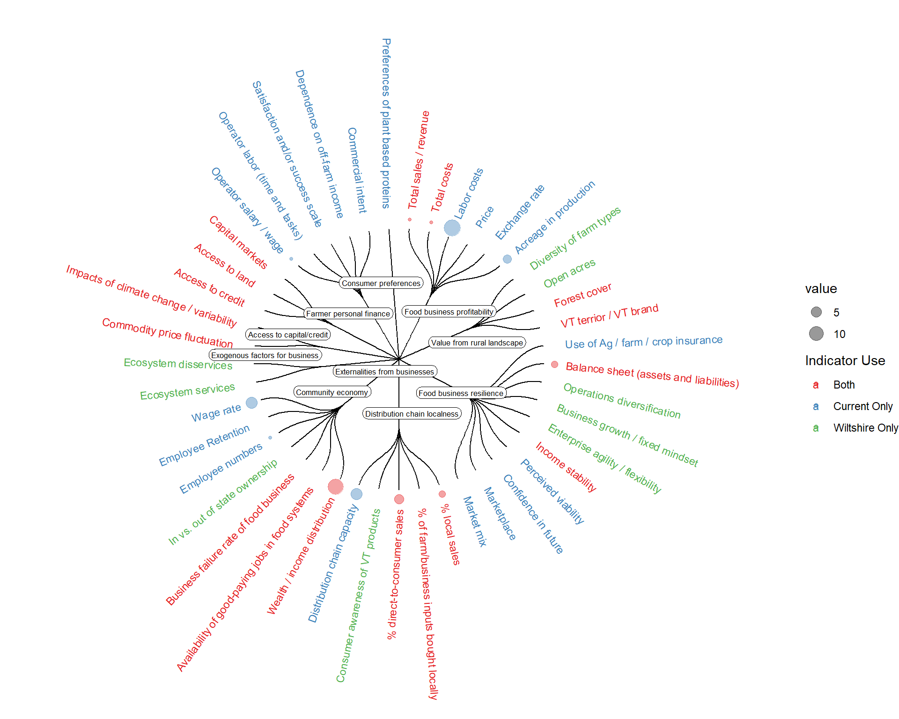

Code
## Load packages
pacman::p_load(
ggraph,
igraph,
dplyr,
RColorBrewer,
viridisLite,
ggrepel,
stringr
)
conflicted::conflicts_prefer(
dplyr::as_data_frame(),
.quiet = TRUE
)
## Load data for tree and metrics
dat <- readRDS('data/trees/econ_tree.rds') %>%
select(Dimension:Source)
metadata_all <- readRDS('data/sm_data.rds')[['metadata']]
meta <- metadata_all %>%
filter(
dimension == 'economics'
)
# Rename metadata so it fits into formatting of tree data
# This is quite not ideal - Note to harmonize this properly later
meta <- meta %>%
mutate(
indicator = str_to_sentence(indicator),
indicator = case_when(
str_detect(indicator, '^Assets') ~ 'Balance sheet (assets and liabilities)',
str_detect(indicator, '^Business failure') ~ 'Business failure rate of food business',
str_detect(indicator, '^Direct') ~ '% direct-to-consumer sales',
str_detect(indicator, '^Job avail') ~ 'Availability of good-paying jobs in food systems',
str_detect(indicator, '^Local sales') ~ '% local sales',
str_detect(indicator, '^Operator salary') ~ 'Operator salary / wage',
str_detect(indicator, '^Total sales') ~ 'Total sales / revenue',
str_detect(indicator, '^Wealth/income') ~ 'Wealth / income distribution',
TRUE ~ indicator
)
)
# Join counts of secondary data metrics to original dataset
# Remove the NAICS variables - there are so many of them, don't add much
counts <- meta %>%
filter(str_detect(variable_name, '^lq|lvl|Lvl|Naics', negate = TRUE)) %>%
group_by(indicator) %>%
dplyr::summarize(count = n())
## Make edges
# include groupings by dimension, then combine them
edges <- list()
edges$dim_ind <- dat %>%
select(Dimension, Index) %>%
unique() %>%
dplyr::rename(from = Dimension, to = Index) %>%
mutate(group = to)
edges$ind_ind <- dat %>%
select(Index, Indicator) %>%
unique() %>%
dplyr::rename(from = Index, to = Indicator) %>%
mutate(group = from)
edges <- bind_rows(edges)
# Add column for use (will use in colors of text?)
edges$group <- c(rep(NA, 10), dat$Source)
## Make vertices
# Each line is a single vertex (dimension, index, or indicator)
# We are just giving them random values to control point size for now
vertices = data.frame(
name = unique(c(as.character(edges$from), as.character(edges$to)))
) %>%
left_join(counts, by = join_by(name == indicator)) %>%
dplyr::rename('value' = count)
# Add the dimension groupings to the vertices as well
vertices$group = edges$group[match(vertices$name, edges$to)]
# Calculate the angles to arrange indicator labels
vertices$id = NA
myleaves = which(is.na(match(vertices$name, edges$from)))
nleaves = length(myleaves)
vertices$id[myleaves] = seq(1:nleaves)
vertices$angle = 90 - 360 * vertices$id / nleaves
# Calculate alignment of indicator labels
vertices$hjust <- ifelse(vertices$angle < -90, 1, 0)
# Flip label angles around 180 degrees if they are facing the wrong way
vertices$angle <- ifelse(vertices$angle < -90, vertices$angle + 180, vertices$angle)
## Create graph
# Make ggraph object from edges and vertices
graph <- graph_from_data_frame(edges, vertices = vertices)
# Plot the graph
ggraph(graph, layout = 'dendrogram', circular = TRUE) +
# Color edges by dimension
geom_edge_diagonal(color = 'black', width = 0.5) +
# Create text for indicators using angles, hjust, and dimension groupings
geom_node_text(
aes(
x = x * 1.15,
y = y * 1.15,
filter = leaf,
label = name,
angle = angle,
hjust = hjust,
colour = group
),
size = 3,
alpha = 1
) +
# Label indices within graph
geom_label_repel(
aes(
x = x,
y = y,
label = ifelse(name %in% unique(dat$Index), name, NA)
),
label.padding = unit(0.15, "lines"),
label.r = unit(0.3, "lines"),
label.size = 0.05,
size = 2.25,
force = 0.1,
force_pull = 1,
max.overlaps = 10
) +
# Make the points for indicators based on secondary metric count
geom_node_point(
aes(
filter = leaf,
x = x * 1.07,
y = y * 1.07,
colour = group,
size = value
),
alpha = 0.4
) +
# Various formatting options
scale_colour_manual(values = brewer.pal(3, 'Set1')) +
# scale_size_continuous(range = c(0.1, 7)) +
theme_void() +
theme(
plot.margin = unit(c(0, 0, 0, 0), "cm")
) +
scale_colour_manual(
name = "Indicator Use",
values = brewer.pal(3, 'Set1'),
labels = c("Both", "Current Only", "Wiltshire Only")
) +
expand_limits(x = c(-2.5, 2.5), y = c(-2.5, 2.5))